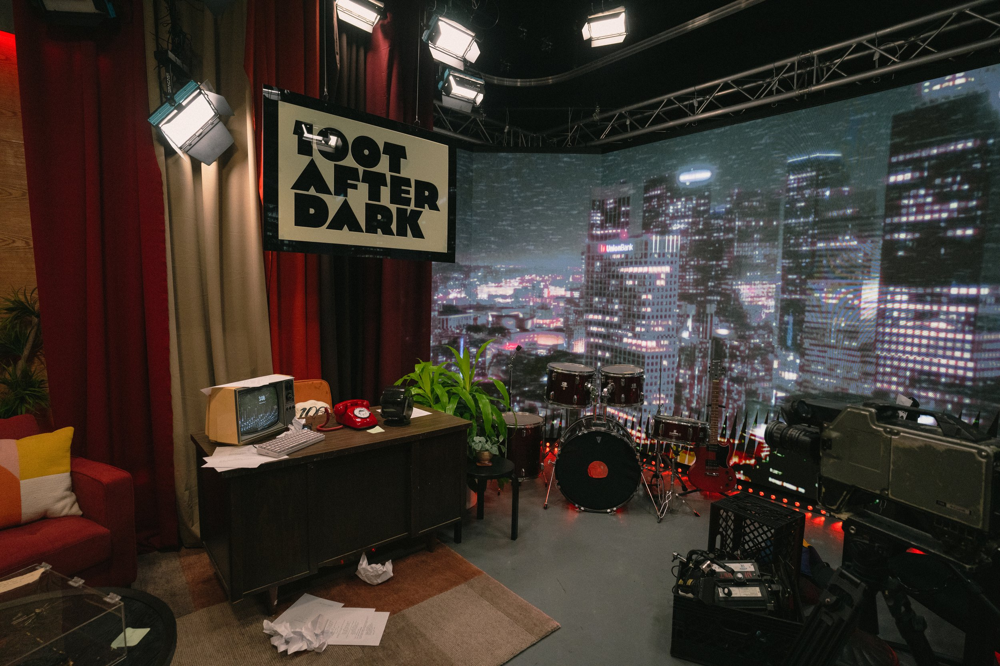
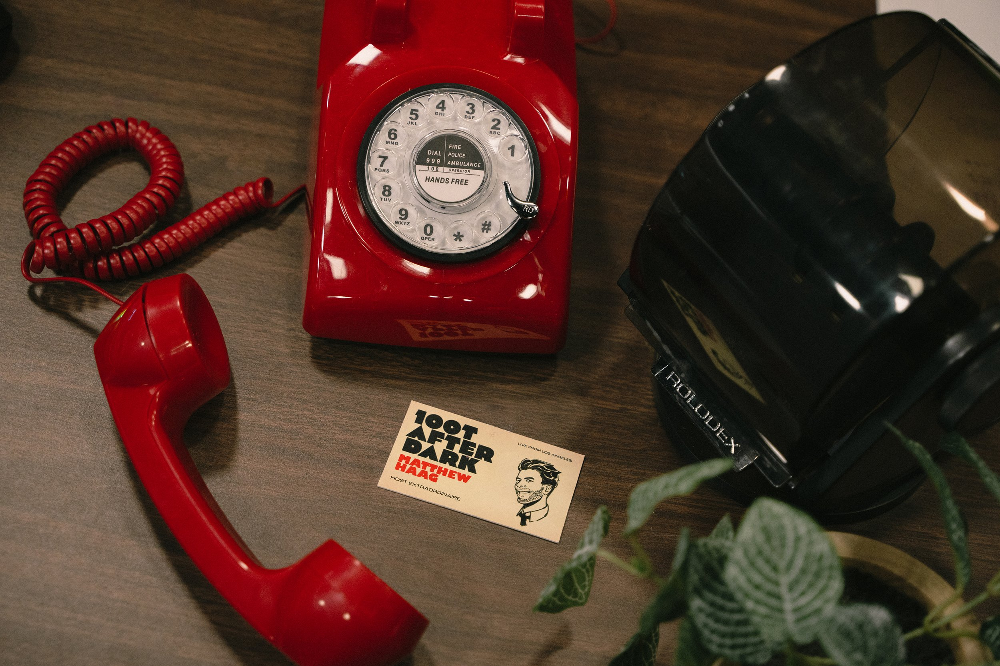
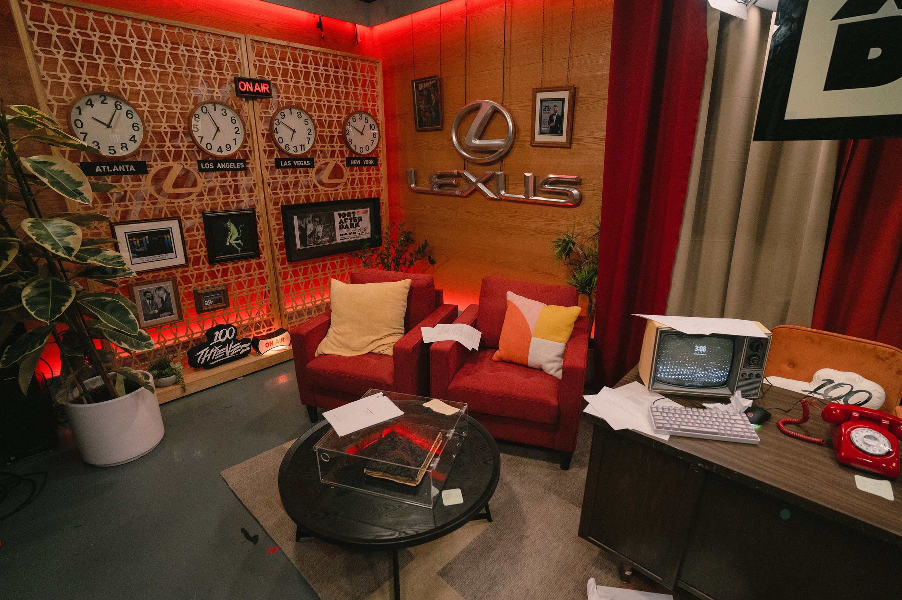
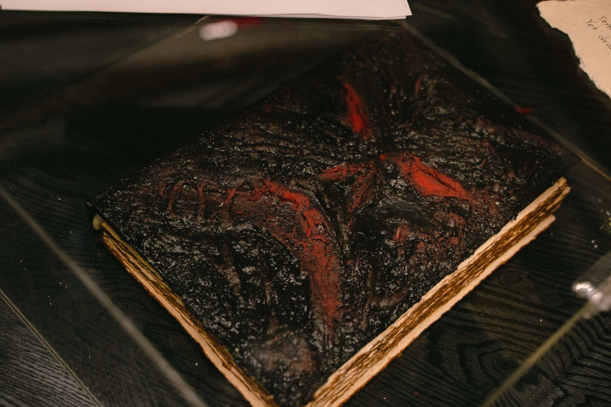
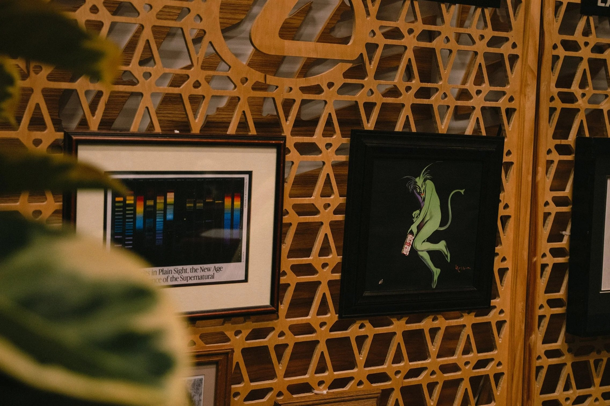
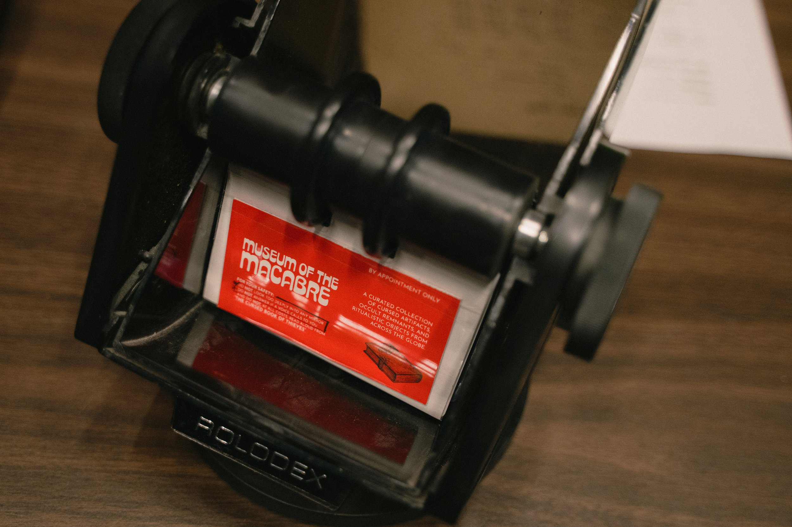

100 Thieves x LExusescape room
Relive your worst day ever - again and again - unless you can rewrite the script. Step onto the haunted set of the cult late-night show“100T After Dark”, where time resets with every take and the final cut could trap you in an eternal rerun. It all began with Episode 100. The episode that never aired… the finale that never happened. They brought an ancient book on set. A relic best left unopened. But they tampered with what should not be… and they angeredThe Cursed Book of Thieves!
At the center, a sleek mid-century desk with a mysterious, glass-encased artifact: an ancient book, worn and bound in strange symbols. Something about it feels… off. Look closer, and the illusion of perfection cracks. Papers are scattered across the floor. A chair is toppled. A coffee mug lies broken near a microphone stand. The air is thick with the feeling that something went wrong here. And whatever it was... it might still be here.
Talent featured: peterparktv, Yvonnie, ursungirl, pipluptiny, Arky, Wex
Client100 Thieves, Lexus
Year2025RoleImmersive Event DesignThematic ProductionPuzzle MasterSpatial DesignWhitney Tsai (Design Support)Jalen Sur (Art Coordinator)Produced in Collaboration with 100 Thieves In House Team. Live Broadcast Direction by Rickey Mizuno.
Can you break the loop and escape before the credits roll... forever?
Puzzle development
We approached the escape room as a story engine - every puzzle, prop, and interaction serving both gameplay and the narrative forward.
Puzzle Flow: We mapped out a clear progression that felt varied and dynamic - moving from a password-locked computer to a color-based word scramble, lighting based clues, interactive buttons, and beyond. This balance of puzzle types ensured moments of tension, discovery, and payoff translated naturally into entertaining content.
We focused on ensuring that the escape room included:
- Variety- Interactivity- Collaboration
custom props
Our team crafted bespoke props that grounded the escape room in its world.
The Cursed Book:custom-built, aged, and weathered to feel like a genuine artifact, serving as both a puzzle device and the narrative centerpiece.
Custom Scripts: in-world documents laced with the talent’s names and narrative details.
Framed Posters & Signage: environmental cues that made the set feel lived-in and incorporated easter eggs that tied back to 100 Thieves.





